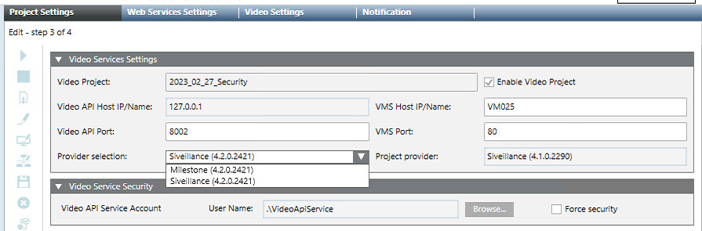

Configure Project Settings for Video
This procedure is part of the workflow for integrating video surveillance.
Prerequisites
- The VMS server is installed and configured.
Configure Project Settings for Video
Do this procedure to set up the link between the Video Management System (VMS) and a Desigo CC project.
- Start the System Management Console (SMC).
- In the SMC tree select Projects > [project].
- Click Stop
 .
. - Click Edit
 .
. - The Project Settings tab displays.
- Click Next
 until the Video Services Settings expander displays.
until the Video Services Settings expander displays. - Configure the Desigo CC side as follows:
- Enable video project: Select this flag, unless you are creating an additional project for a distributed system, and you want video to be enabled in another project. See Project Settings for Management Platform Distribution.
NOTE: Removing this flag later will result in deleting all video information from the project. - Video API host IP/name: The IP address or name of the video interface computer, fixed to localhost (the Video API always runs on the Desigo CC server computer).
- Video API port: The TCP communication port for the video interface, typically set to
8002. - Configure the VMS side as follows:
- Provider selection: From the drop-down list of available providers, select the VMS provider that you want to use.
NOTE: If editing an existing or restored project, the Project provider field indicates the original provider used for the project. Data loss may result if in you switch to a different provider that is incompatible. See VMS Provider Misalignment. - VMS host IP/name: the name or IP address of the computer where the VMS was installed. (For the Siveillance / Milestone VMS, see Installing the VMS Server.)
NOTE: Do not use localhost here, even if the VMS runs on the same computer as the Desigo CC server. This setting is also used by networked client stations to access VMS video streams, and so must specify the server name or IP address. - VMS port: the TCP communication port for the VMS, default value is 80.
- Click Save
 .
.
